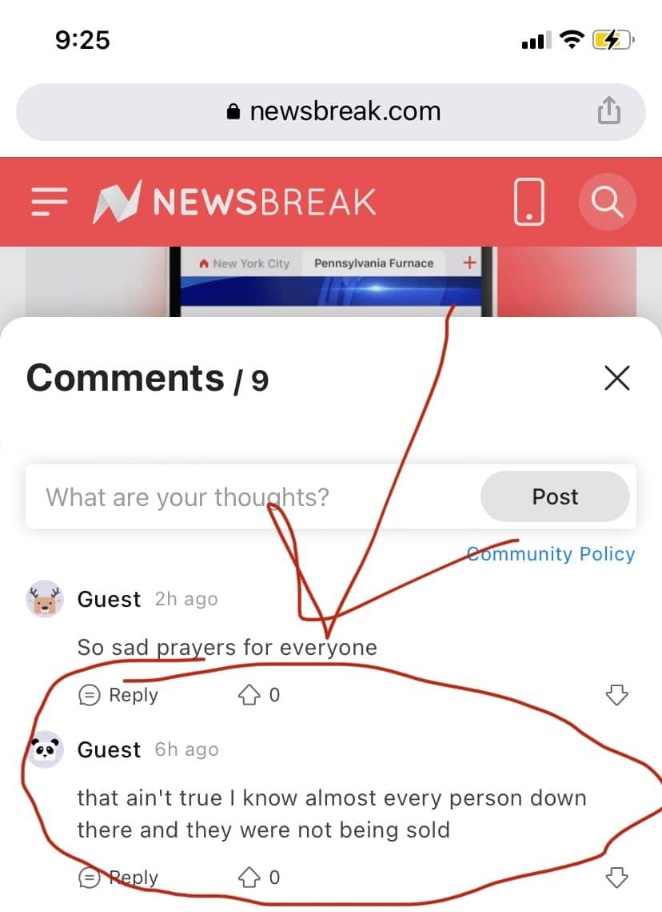

Mobile uploads
This is a comment from newsbreak that is featuring a story about the sex trafficking at our camp.
This is what I hear over and over again. People keep telling me no one at our camp was trafficked.
I want to hear it from the police. I want to know what they find out. The longer this sits in my head the more furious I become over the idea that someone was victimizing a person at my camp. The entire point of what I do is to provide at least a slightly better opportunity of safety than what they could get alone out in the woods.
If there was a predator who was trafficking someone at our camp I want to know who it is. I just become more and more enraged at the idea that that could have happened.